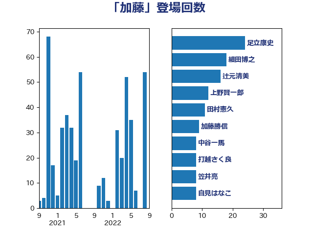

単語「加藤」

| 足立康史 | 日本維新の会 | 24 回 |
| 細田博之 | 自由民主党 | 18 回 |
| 辻元清美 | 立憲民主党 | 16 回 |
| 上野賢一郎 | 自由民主党 | 12 回 |
| 田村憲久 | 自由民主党 | 11 回 |
| 加藤勝信 | 自由民主党 | 9 回 |
| 中谷一馬 | 立憲民主党 | 8 回 |
| 打越さく良 | 立憲民主党 | 8 回 |
| 笠井亮 | 日本共産党 | 8 回 |
| 自見はなこ | 自由民主党 | 8 回 |
| 東徹 | 日本維新の会 | 7 回 |
| 田村まみ | 国民民主党 | 7 回 |
| 長妻昭 | 立憲民主党 | 7 回 |
| 高鳥修一 | 自由民主党 | 7 回 |
| 山口俊一 | 自由民主党 | 6 回 |
| 山谷えり子 | 自由民主党 | 6 回 |
| 柚木道義 | 立憲民主党 | 6 回 |
| 森屋宏 | 自由民主党 | 6 回 |
| 舩後靖彦 | れいわ新選組 | 6 回 |
| 上田清司 | 国民民主党 | 5 回 |
| 伊波洋一 | 無所属 | 5 回 |
| 加藤鮎子 | 自由民主党 | 5 回 |
| 木原誠二 | 自由民主党 | 5 回 |
| 青木一彦 | 自由民主党 | 5 回 |
| 仁木博文 | 無所属 | 4 回 |
| 倉林明子 | 日本共産党 | 4 回 |
| 古川禎久 | 自由民主党 | 4 回 |
| 川田龍平 | 立憲民主党 | 4 回 |
| 有村治子 | 自由民主党 | 4 回 |
| 橋本岳 | 自由民主党 | 4 回 |
| 金田勝年 | 自由民主党 | 4 回 |
| 鶴保庸介 | 自由民主党 | 4 回 |
| 宮本徹 | 日本共産党 | 3 回 |
| 山井和則 | 立憲民主党 | 3 回 |
| 本庄知史 | 立憲民主党 | 3 回 |
| 本田顕子 | 自由民主党 | 3 回 |
| 松原仁 | 立憲民主党 | 3 回 |
| 海江田万里 | 立憲民主党 | 3 回 |
| 田中健 | 国民民主党 | 3 回 |
| 石橋通宏 | 立憲民主党 | 3 回 |
| 菅義偉 | 自由民主党 | 3 回 |
| 阿部知子 | 立憲民主党 | 3 回 |
| ながえ孝子 | 無所属 | 2 回 |
| 三ッ林裕巳 | 自由民主党 | 2 回 |
| 中島克仁 | 立憲民主党 | 2 回 |
| 中西祐介 | 自由民主党 | 2 回 |
| 佐々木紀 | 自由民主党 | 2 回 |
| 加藤竜祥 | 自由民主党 | 2 回 |
| 吉田宣弘 | 公明党 | 2 回 |
| 城内実 | 自由民主党 | 2 回 |
| 宮崎政久 | 自由民主党 | 2 回 |
| 小池晃 | 日本共産党 | 2 回 |
| 山本順三 | 自由民主党 | 2 回 |
| 山本香苗 | 公明党 | 2 回 |
| 山田宏 | 自由民主党 | 2 回 |
| 斎藤嘉隆 | 立憲民主党 | 2 回 |
| 早稲田ゆき | 立憲民主党 | 2 回 |
| 江田憲司 | 立憲民主党 | 2 回 |
| 湯原俊二 | 立憲民主党 | 2 回 |
| 田島麻衣子 | 立憲民主党 | 2 回 |
| 田所嘉徳 | 自由民主党 | 2 回 |
| 田村智子 | 日本共産党 | 2 回 |
| 石川大我 | 立憲民主党 | 2 回 |
| 若松謙維 | 公明党 | 2 回 |
| 野田聖子 | 自由民主党 | 2 回 |
| 金子俊平 | 自由民主党 | 2 回 |
| 金子恭之 | 自由民主党 | 2 回 |
| 馬淵澄夫 | 立憲民主党 | 2 回 |
| 高木かおり | 日本維新の会 | 2 回 |
| 高木毅 | 自由民主党 | 2 回 |
| 高橋千鶴子 | 日本共産党 | 2 回 |
| 鷲尾英一郎 | 自由民主党 | 2 回 |
| あかま二郎 | 自由民主党 | 1 回 |
| こやり隆史 | 自由民主党 | 1 回 |
| 三木圭恵 | 日本維新の会 | 1 回 |
| 三浦信祐 | 公明党 | 1 回 |
| 中根一幸 | 自由民主党 | 1 回 |
| 丸川珠代 | 自由民主党 | 1 回 |
| 井上哲士 | 日本共産党 | 1 回 |
| 伊佐進一 | 公明党 | 1 回 |
| 伊東良孝 | 自由民主党 | 1 回 |
| 伊藤孝恵 | 国民民主党 | 1 回 |
| 佐藤信秋 | 自由民主党 | 1 回 |
| 吉川ゆうみ | 自由民主党 | 1 回 |
| 吉川赳 | 無所属 | 1 回 |
| 吉田統彦 | 立憲民主党 | 1 回 |
| 宮本岳志 | 日本共産党 | 1 回 |
| 小林茂樹 | 自由民主党 | 1 回 |
| 小熊慎司 | 立憲民主党 | 1 回 |
| 尾崎正直 | 自由民主党 | 1 回 |
| 山岡達丸 | 立憲民主党 | 1 回 |
| 山崎正恭 | 公明党 | 1 回 |
| 山東昭子 | 自由民主党 | 1 回 |
| 岡田克也 | 立憲民主党 | 1 回 |
| 川合孝典 | 国民民主党 | 1 回 |
| 川崎ひでと | 自由民主党 | 1 回 |
| 平口洋 | 自由民主党 | 1 回 |
| 朝日健太郎 | 自由民主党 | 1 回 |
| 杉田水脈 | 自由民主党 | 1 回 |
| 松川るい | 自由民主党 | 1 回 |
| 松沢成文 | 日本維新の会 | 1 回 |
| 松野博一 | 自由民主党 | 1 回 |
| 枝野幸男 | 立憲民主党 | 1 回 |
| 柳ヶ瀬裕文 | 日本維新の会 | 1 回 |
| 根本匠 | 自由民主党 | 1 回 |
| 梅村聡 | 日本維新の会 | 1 回 |
| 梅谷守 | 立憲民主党 | 1 回 |
| 森山浩行 | 立憲民主党 | 1 回 |
| 森英介 | 自由民主党 | 1 回 |
| 横沢高徳 | 立憲民主党 | 1 回 |
| 池下卓 | 日本維新の会 | 1 回 |
| 沢田良 | 日本維新の会 | 1 回 |
| 浦野靖人 | 日本維新の会 | 1 回 |
| 清水貴之 | 日本維新の会 | 1 回 |
| 源馬謙太郎 | 立憲民主党 | 1 回 |
| 田嶋要 | 立憲民主党 | 1 回 |
| 畦元将吾 | 自由民主党 | 1 回 |
| 石井章 | 日本維新の会 | 1 回 |
| 石原正敬 | 自由民主党 | 1 回 |
| 福岡資麿 | 自由民主党 | 1 回 |
| 篠原孝 | 立憲民主党 | 1 回 |
| 羽生田俊 | 自由民主党 | 1 回 |
| 芳賀道也 | 国民民主党 | 1 回 |
| 菊田真紀子 | 立憲民主党 | 1 回 |
| 薗浦健太郎 | 自由民主党 | 1 回 |
| 藤原崇 | 自由民主党 | 1 回 |
| 豊田俊郎 | 自由民主党 | 1 回 |
| 赤羽一嘉 | 公明党 | 1 回 |
| 越智隆雄 | 自由民主党 | 1 回 |
| 道下大樹 | 立憲民主党 | 1 回 |
| 金城泰邦 | 公明党 | 1 回 |
| 鈴木英敬 | 自由民主党 | 1 回 |
| 高橋光男 | 公明党 | 1 回 |
| 高良鉄美 | 無所属 | 1 回 |
| 鰐淵洋子 | 公明党 | 1 回 |